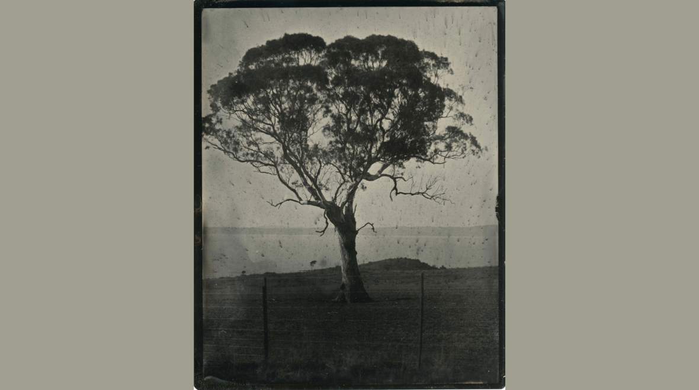
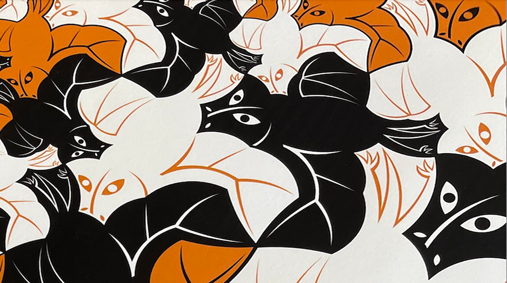
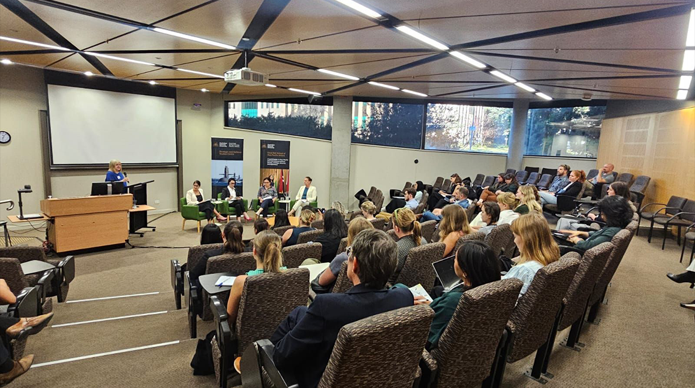
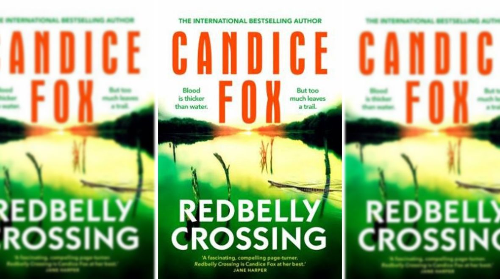
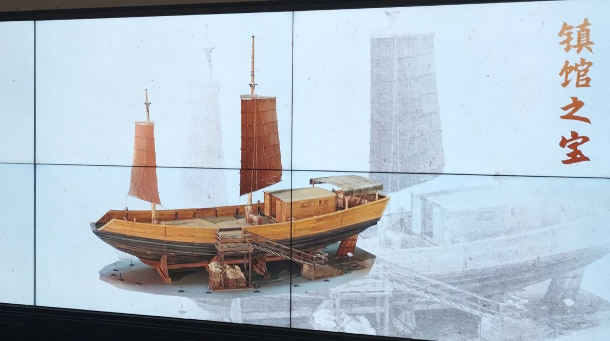
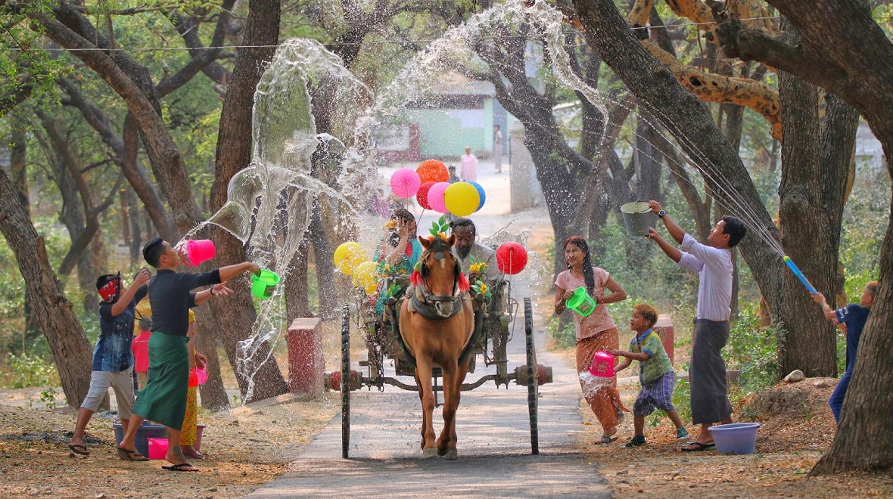

13 February - 4 April 2026
after/image presents new work from artist and curator Brenda L Croft. Working with sites in the Goulburn Mulwaree region that connect directly to her family history, Croft offers a story of connection and distance, memory and loss over time.

26 March - 8 May 2026
Mathematicians and Artists will be showcasing their mathematical creativity within the Hanna Neumann building #145.

13 April 2026
The Voices of the Future Conference is the culmination of the Women in Strategic Policy program (WISP), co-led by The Australian National University’s Strategic and Defence Studies Centre and Girls Run the World.

14 April 2026
after/image presents new work from artist and curator Brenda L Croft. Working with sites in the Goulburn Mulwaree region that connect directly to her family history, Croft offers a story of connection and distance, memory and loss over time.

16 April 2026
Intangible cultural heritage has become an increasingly visible policy domain in contemporary China. This talk uses maritime heritage as a lens to examine how local governance operates in coastal regions. Drawing on a series of typical examples, it shows how local governments mobilise maritime traditions within broader agendas of tourism development, cultural industries, and regional branding. Rather than simply implementing central policy, local actors reinterpret heritage frameworks and work with practitioners, communities, and market actors to produce locally specific governance outcomes. Seen in this light, maritime heritage is not only something to be safeguarded. It is also a practical medium through which local states organise cultural life, pursue development, and negotiate legitimacy in contemporary China.

17 April 2026
The ANU School of Culture, History & Language (CHL) is proud to host this celebration of the ANU New Year Water Festival in celebration of the Myanmar New Year in April, also known as the Water Festival. The occasion originated from old Hinduism but is now widely recognised as a culture of Theravada Buddhism countries.